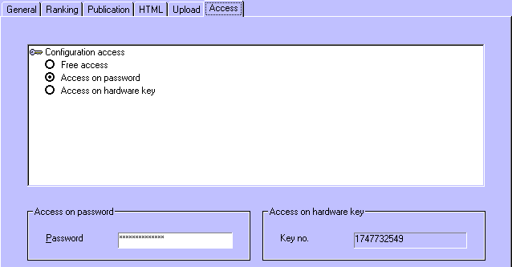

|
|
|
|
|
Access SettingsThrough in the menu, and then choosing for the Access tab, you can lock the configuration functions of StageRace for this event.

With protection it is not longer possible to alter the main characteristics of an event. This can be desirable to enforce a good division of tasks between configuration and administration of an event, as described elsewhere.
The following access settings can be made:
Set the configuration access to:
Enter:
Note that the protection of the document is only a protection of the configuration settings. Data input and processing will remain possible as normal.
|